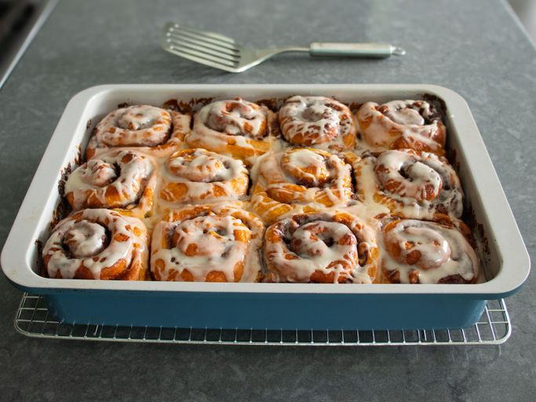

Apple 'Cider Bath' Cinnamon Rolls

Description
These apple “cider bath” cinnamon rolls are a seasonal twist on cream-bathed cinnamon rolls. I used apple cider to bathe the rolls and the results were terrific. In addition I am using a very easy no knead dough for my cinnamon rolls.
Ingredients
Dough:
- 1 cup plus 2 tablespoons warm milk (90 degrees F/32 degrees C)
- 2 1/4 teaspoons active dry yeast
- 1/3 cup white sugar
- 6 tablespoons unsalted butter, melted
- 1 large egg, beaten
- 3/4 teaspoon fine salt
- 4 1/4 cups all purpose flour
Filling:
- 4 tablespoons soft butter
- 1/3 cup apple butter
- 1/3 cup brown sugar
- 1/3 cup white sugar
- 2 tablespoons cinnamon
- 1/2 cup chopped walnuts (optional)
Bath:
- 4 cups apple cider
- 2/3 cup cream
Icing:
- 1/4 cup reduced apple cider
- 2 cups powdered sugar
Steps
- Step 1: Pour warm milk into a small bowl and sprinkle yeast on top. Allow to sit for 10 minutes. Add sugar, melted butter, egg, and salt. Whisk to combine. Add flour and stir with a wooden spoon handle until everything is well combined and a sticky dough forms. Cover and let sit for 20 minutes.
- Step 2: Wet your hands. Uncover dough and do a set of 6 or 7 “stretch and folds” of the dough with your wet hands, turning the bowl as you go. Wet your hands again and shape the dough into a smooth ball. Cover and let raise until doubled in size, about 1 1/2 hours.
- Step 3: Transfer dough to a work surface and press out the air. Grab dough from the edge and stretch it over the top to the center. Repeat about 5 times, going all the way around, until the dough comes together. Flip dough over and use your hand and a bench scraper to form the dough into a tight ball using a circular motion on the table. Set dough into an oiled resealable bag and refrigerate overnight.
- Step 4: The next day transfer cold dough to a floured surface and press flat into a rectangle shape. Dust with flour and roll into a large oval. Dust again and flip dough over. Use you hands to gently stretch the dough to form a rectangle. Continue rolling until you have a rectangle that is approximately 18x12 inches.
- Step 5: For the filling, combine butter, apple butter, brown sugar, white sugar, and cinnamon in a bowl.
- Step 6: Spread filling onto the dough, leaving about 1.5 inches of dough bare on the long opposite side. Scatter over walnuts. Roll dough up tightly and carefully without pressing out the filling, finishing with the seam side down. Use your hands to press into a uniform tube. Score into 12 equal portions, trimming a little bit of the dough off each end. Use a string or knife to cut dough roll into 12 rolls. The extra dough can be added to the bottoms of some of the smaller rolls.
- Step 7: Transfer cinnamon rolls into a buttered 13x9 baking pan or dish. Cover and let proof until the rolls have risen by about 50% and are touching each other, about 1 hour.
- Step 8: For the bath, pour apple cider into a saucepan and bring to a boil over medium-high heat. Boil until apple cider has reduced by half, about 12 minutes. Ladle out 1/4 cup of reduced apple cider and reserve for the icing. Continue cooking until the cider has reduced to about 1/3 cup and gets syrupy, about 12 more minutes. Turn off heat and stir in cream. Set aside until rolls are fully proofed.
- Step 9: Once cinnamon rolls are proofed, ladle the cider bath evenly over the rolls, coating as much of the surface as possible.
- Step 10: Preheat the oven to 350 degrees F (180 degrees C).
- Step 11: Bake cinnamon rolls in the preheated oven for 30 to 35 minutes. The internal temperature in the center of each roll should read 190 degrees F (88 degrees C). Remove from the oven and allow cinnamon rolls to cool for 10 to 15 minutes while preparing the icing.
- Step 12: Whisk powdered sugar, 1 cup at a time, into the reserved reduced apple cider until you have a smooth, thick, yet pourable icing. Drizzle icing over the rolls using a whisk. Allow cinnamon rolls to cool until just warm and serve.
Home